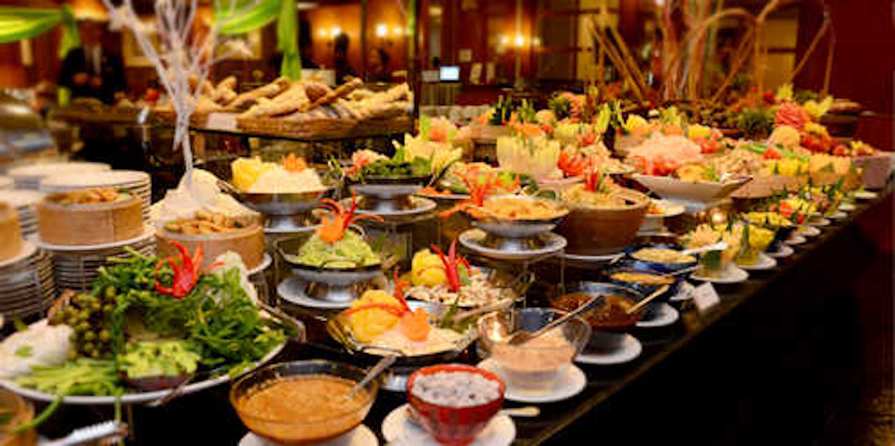
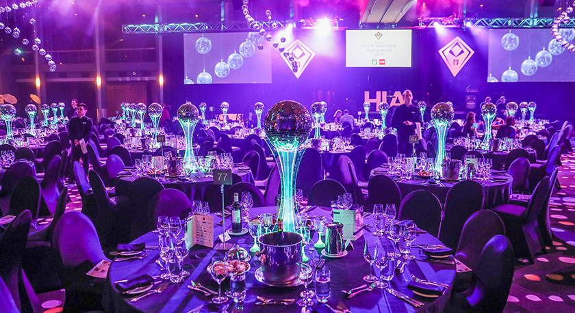
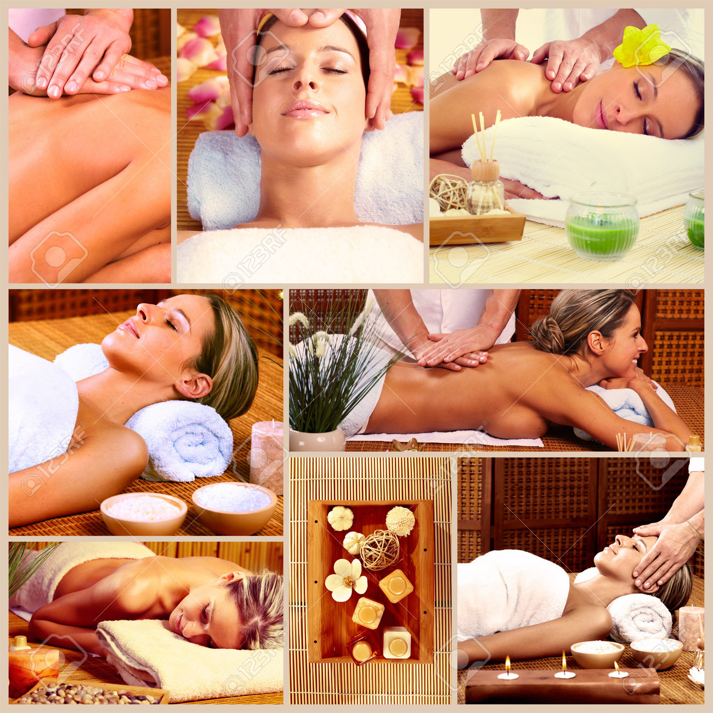

Five-star hotels provide a wide range of luxurious lodging options tailored to individual tastes. Visitors can opt for luxurious suites boasting expansive vistas and tailored services, extravagant rooms featuring sophisticated decor and state-of-the-art conveniences, or secluded villas or cottages for utmost seclusion. Every accommodation is meticulously crafted to deliver comfort, elegance, and a remarkable stay, guaranteeing an indelible five-star experience.

Five-star hotels present a rich variety of food experiences, from refined fine dining to global flavors. Patrons delight in expertly crafted gourmet meals by acclaimed chefs, indulge in opulent buffets offering abundant choices, and relish unique culinary adventures such as fusion dishes, handcrafted pastries, and delectable seafood specialties.
Five-star hotels accommodate various events, spanning from lavish weddings and corporate conferences to elegant galas and private gatherings. With flawless service, upscale venues, and exceptional catering choices, these occasions are meticulously organized to craft unforgettable memories, embodying the hotel's refined style and sophistication.
At a five-star hotel, the spa and wellness amenities provide a haven for unwinding and revitalization. Patrons have access to a variety of lavish treatments such as massages, facials, and body therapies administered by expert practitioners. The tranquil atmosphere, modern amenities, and customized care guarantee a serene retreat from everyday pressures, fostering overall wellness and inner balance.
